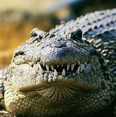

Crocodile, (order Crocodylia, or Crocodilia), any of about 27 species of generally large, ponderous, amphibious animals of lizard-like appearance and carnivorous habit belonging to the reptile order Crocodylia. Crocodiles have powerful jaws with many conical teeth and short legs with clawed webbed toes. They share a unique body form that allows the eyes, ears, and nostrils to be above the water surface while most of the animal is hidden below. The tail is long and massive, and the skin is thick and plated.Crocodiles are a living link with the dinosaur-like reptiles of prehistoric times and are the nearest living relatives of the birds. A large variety of crocodilian fossils have been discovered that date back 200 million years to the Late Triassic Epoch. Fossil evidence also suggests that three major radiations occurred. Only one of the four suborders of crocodiles has survived to modern times. The order Crocodylia includes the “true crocodiles,” alligators, caimans, and gavials.Crocodiles are the largest and the heaviest of present-day reptiles. The largest representatives, the Nile crocodile (Crocodylus niloticus) of Africa and the estuarine (or saltwater) crocodile (C. porosus) of Southeast Asia and Australia, attain lengths of up to 7 meters (about 23 feet) and weigh more than 1,200 kg (nearly 2,650 pounds). Some fossil forms (such as Deinosuchus and Sarcosuchus) may have been between 10 and 12 meters (33 and 40 feet) long. In comparison, the smallest species, the smooth-fronted caiman (Paleosuchus) and the dwarf crocodile (Osteolaemus tetraspis), reach about 1.7 meters (about 6 feet) in length as adults.Nile crocodile (Crocodylus niloticus)The Nile crocodile (Crocodylus niloticus) inhabits a wide swath of eastern and sub-Saharan Africa and Madagascar. It is one of the largest crocodiles, growing to lengths up to 6 meters (20 feet) and a mass of more than 1,000 kg (about 2,200 pounds). estuarine crocodile, or saltwater crocodile (Crocodylus porosus) An estuarine crocodile, or saltwater crocodile (Crocodylus porosus) basking in the sun. Estuarine crocodiles rival Nile crocodiles (Crocodylus niloticus) in both size and length.All crocodiles have a relatively long snout, or muzzle, which varies considerably in shape and proportion. The scales that cover most of the body generally are arranged in a regular pattern, and thick, bony plates occur on the back. Families and genera are primarily distinguished by differences in skull anatomy. Species are identified principally by the proportions of the snout; by the bony structures on the dorsal, or upper, surface of the snout; and by the number and the arrangement of the scales.
